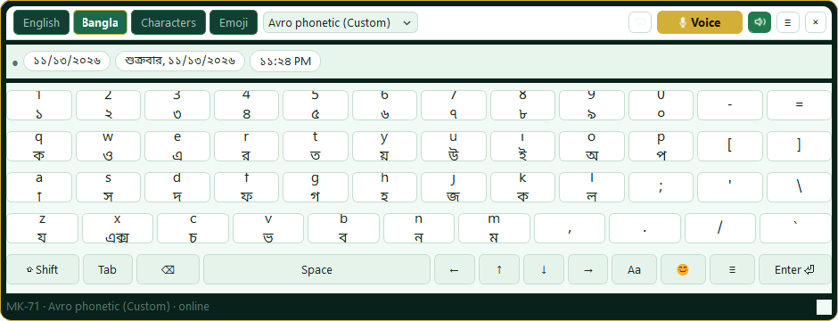

Windows-এর জন্য ফ্রি বাংলা ও English কিবোর্ড। Avro/ফোনেটিক টাইপিং, বিজয় ৫২, Probhat, Unibijoy সহ ৯টি লেআউট, ANSI/Bijoy এনকোডিং কনভার্টার, সাজেশন ও অটো-কারেকশন — সব এক অ্যাপে, ইন্টারনেট ছাড়াই।
নতুন? ডাউনলোড ও ইনস্টল গাইড — কোন ফাইল নামাবেন, ধাপে ধাপে সেটআপ আর সাধারণ সমস্যার সমাধান এক পেজে।
অ্যাপটির পুরো নাম MK-71 Keyboard। অনেকে এটাকে Mk71 Keyboard, mk71 keybord, Mk71-keybord বা MK 71 keyboard লিখেও খোঁজেন — সবগুলোই এই একই অ্যাপ, আর ডাউনলোড সবসময় একই রিলিজ পেজ থেকে হয়।



যা যা আছে
- দুটো ভাষা — Avro/ফোনেটিক বা ফিক্সড বাংলা লেআউট, আর পূর্ণ English QWERTY।
- বিজয় ৫২, অভ্র, কণ্ঠ-র ফিচার — Avro phonetic, Banglish, Bijoy Bayanno, Inscript, Khipro, Munir Optima, National (Jatiya), Probhat, Unibijoy; নিজের লেআউট Import।
- এনকোডিং কনভার্টার — ANSI / Bijoy / Probhat ↔ Unicode।
- অন্য অ্যাপেও বাংলা — Ctrl+Alt+K দিয়ে Chrome, Word, Notepad যে-কোনো জায়গায়।
- ভয়েস টাইপিং — মাইকে বলুন, লেখা বসে যাবে; কোটা শেষ হলে ফ্রি সার্ভিসে নেমে যায়।
- AI প্রুফরিডিং (ঐচ্ছিক) — বানান-যতিচিহ্ন, সমার্থক শব্দ, অনুবাদ।
- অফলাইন ও প্রাইভেট — কোনো ট্র্যাকিং নেই, অ্যাকাউন্ট লাগে না।
ফিচারের বিস্তারিত: কী কী আছে ও কোন ফাইল নামাবেন।
প্রশ্ন ও উত্তর
Mk71 Keyboard কী? বাংলা ও English লেখার একটি ছোট Windows অ্যাপ — অন-স্ক্রিন কিবোর্ড, ভয়েস টাইপিং, এনকোডিং কনভার্টার আর ঐচ্ছিক AI প্রুফরিডিং একসাথে।
দাম কত? ফ্রি। অ্যাক্টিভেশন, লাইসেন্স কি বা সাবস্ক্রিপশন নেই।
কোথায় চলে? Windows 7 SP1, 8.1, 10 ও 11 — ৩২ ও ৬৪-বিট দুটোতেই।
ইনস্টল করতে হবে? না — পোর্টেবল জিপ আনজিপ করে চালালেই হয়; চাইলে ইনস্টলারও আছে।
লিংক
GitHub: github.com/Mk4u-Me/mk71-keyboard
সর্বশেষ রিলিজ: releases/latest
Telegram: t.me/mk4u71 · Email: Mk4ume@proton.me